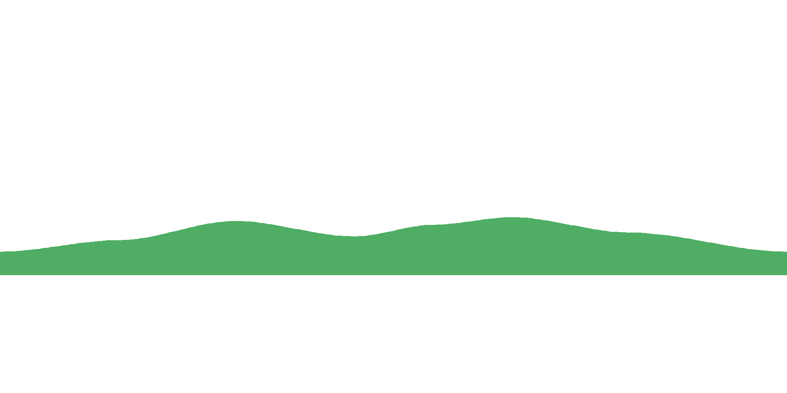
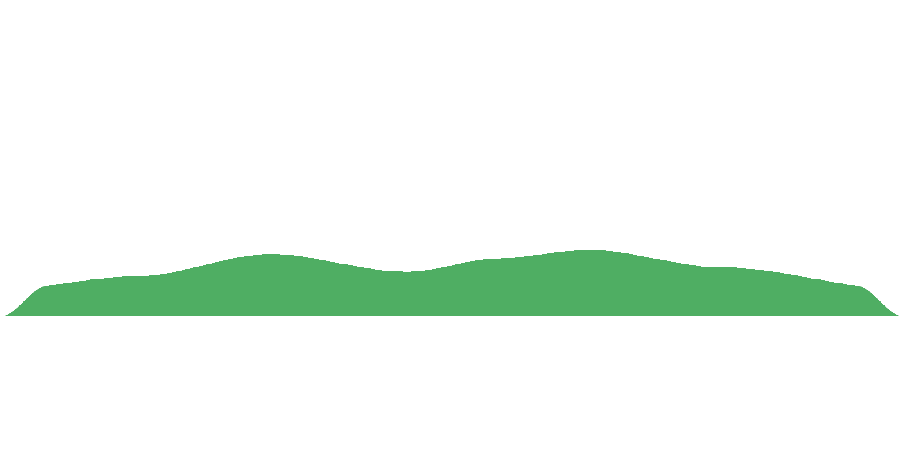

Same silhouette, three views. Sketch is the hand-drawn topography.
Shape mask is the silhouette tapered by admin-island-sketches.html
and fed to Gemini as the shape reference. Gemini · cartoon is the painted
baseline with a topline-sample overlay so you can see where a naive alpha-based runtime would
place Wefty's run-line vs where the silhouette puts it.
run_island_surfaces.json should encode)

